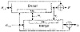
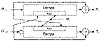
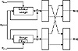
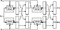

| Previous | Table of Contents | Next |
This scheme appeared in a 1989 draft ISO standard [764], but was dropped in a later version [765]. Security problems with this scheme were identified in [1107, 925, 1262, 372]. (Actually, the version in the proceedings was strengthened after the version presented at the conference was attacked.) In some instances the birthday attack is solvable with a complexity of 239, not 264, through brute force. Do not use this scheme.
LOKI Double-Block
This algorithm is a modification of Quisquater-Girault, specifically designed to work with LOKI [273]. All parameters are as in Quisquater-Girault.
Again, in some instances the birthday attack is trivially solvable [925, 926, 1262, 372, 736]. Do not use this scheme.
Parallel Davies-Meyer
This is yet another attempt at an algorithm with a hash rate of 1 that produces a hash twice the block length [736].
Unfortunately, this scheme isn’t secure either [928, 861]. As it turns out, a double-length hash function with a hash rate of 1 cannot be more secure than Davies-Meyer [861].
Tandem and Abreast Davies-Meyer
Another way around the inherent limitations of a block cipher with a 64-bit key uses an algorithm, like IDEA (see Section 13.9), with a 64-bit block and a 128-bit key. These two schemes produce a 128-bit hash value and have a hash rate of ½ [930, 925].

Figure 18.11 Tandem Davies-Meyer.
In this first scheme, two modified Davies-Meyer functions work in tandem (see Figure 18.11).
The following scheme uses two modified Davies-Meyer functions side-by-side (see Figure 18.12).
In both schemes, the two 64-bit hash values Gi and Hi are concatenated to produce a single 128-bit hash.
As far as anyone knows, these algorithms have ideal security for a 128-bit hash function: Finding a message that hashes to a given hash value requires 2128 attempts, and finding two random messages that hash to the same value requires 264 attempts—assuming that there is no better way to attack the block algorithm than by using brute force.
MDC-2 and MDC-4
MDC-2 and MDC-4 were first developed at IBM [1081, 1079]. MDC-2, sometimes called Meyer-Schilling, is under consideration as an ANSI and ISO standard [61, 765]; a variant was proposed in [762]. MDC-4 is specified for the RIPE project [1305] (see Section 25.7). The specifications use DES as the block function, although in theory any encryption algorithm could be used.

Figure 18.12 Abreast Davies-Meyer.

Figure 18.13 MDC-2.
MDC-2 has a hash rate of ½, and produces a hash value twice the length of the block size. It is shown in Figure 18.13. MDC-4 also produces a hash value twice the length of the block size, and has a hash rate of ¼ (see Figure 18.14).
These schemes have been analyzed in [925, 1262]. They are secure against current computing power, but they are not nearly as secure as the designers have estimated. If the block algorithm is DES, they have been looked at with respect to differential cryptanalysis [1262].
Both MDC-2 and MDC-4 are patented [223].
AR Hash Function
The AR hash function was developed by Algorithmic Research, Ltd. and has been distributed by the ISO for information purposes only [767]. Its basic structure is a variant of the underlying block cipher (DES in the reference) in CBC mode. The last two ciphertext blocks and a constant are XORed to the current message block and encrypted by the algorithm. The hash is the last two ciphertext blocks computed. The message is processed twice, with two different keys, so the hash function has a hash rate of ½. The first key is 0x0000000000000000, the second key is 0x2a41522f4446502a, and c is 0x0123456789abcdef. The result is compressed to a single 128-bit hash value. See [750] for the details.
This sounds interesting, but it is insecure. After considerable preprocessing, it is possible to find collisions for this hash function easily [416].

Figure 18.14 MDC-4.
GOST Hash Function
This hash function comes from Russia, and is specified in the standard GOST R 34.11-94 [657]. It uses the GOST block algorithm (see Section 14.1), although in theory it could use any block algorithm with a 64-bit block size and a 256-bit key. The function produces a 256-bit hash value.
The compression function, Hi = f(Mi,Hi-1) (both operands are 256-bit quantities) is defined as follows:
The final hash of M is not the hash of the last block. There are actually three chaining variables: Hn is the hash of the last message block, Z is the sum mod 2256 of all the message blocks, and L is the length of the message. Given those variables and the padded last block, M', the final hash value is:
The documentation is a bit confusing (and in Russian), but I think all that is correct. In any case, this hash function is specified for use with the Russian Digital Signature Standard (see Section 20.3).
| Previous | Table of Contents | Next |
){kind=link}
){kind=link}
){kind=link}
){kind=link}
){kind=link}
){kind=link}
){kind=link}
){kind=link}